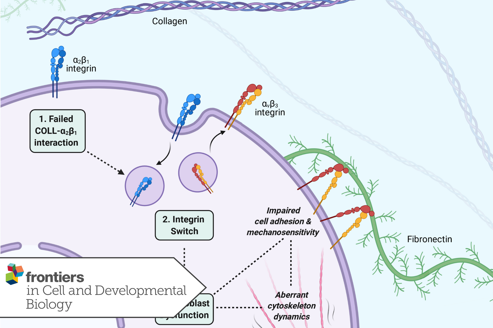

Review article · 2021
The Role of Cell Adhesion and Cytoskeleton Dynamics in the Pathogenesis of the Ehlers-Danlos Syndromes and Hypermobility Spectrum Disorders
Frontiers in Cell and Developmental Biology, 9, 649082 (2021)
Read the publication ↗What was the research about?
Ehlers-Danlos syndromes (EDS) and Hypermobility Spectrum Disorders (HSD) are conditions affecting connective tissues, which provide support and structure throughout the body. Although EDS is traditionally understood in terms of abnormalities in collagen, a major structural protein, these abnormalities do not always explain the severity or range of symptoms experienced. This review explored whether changes in how connective tissue cells attach to and engage with collagen could provide an additional explanation.
What did the research find?
The review proposed a novel disease mechanism involving fibroblasts, the predominant cells in connective tissue. Fibroblasts attach to structural proteins such as collagen through receptors called integrins, which also enable them to sense and respond to mechanical forces. The review brought together evidence suggesting that altered integrin activity could weaken cell attachment to collagen and disrupt the internal cellular framework. In turn, these changes could impair the cells’ ability to regulate tension within connective tissue.
Why does it matter?
This proposed mechanism offers a new way to understand how connective tissue dysfunction may develop across EDS/HSD, including cases where abnormalities in collagen structure alone cannot explain the clinical features. Further investigation could help identify biological processes shared across different subtypes and inform the development of new diagnostic biomarkers. However, the proposed mechanism requires further experimental validation.